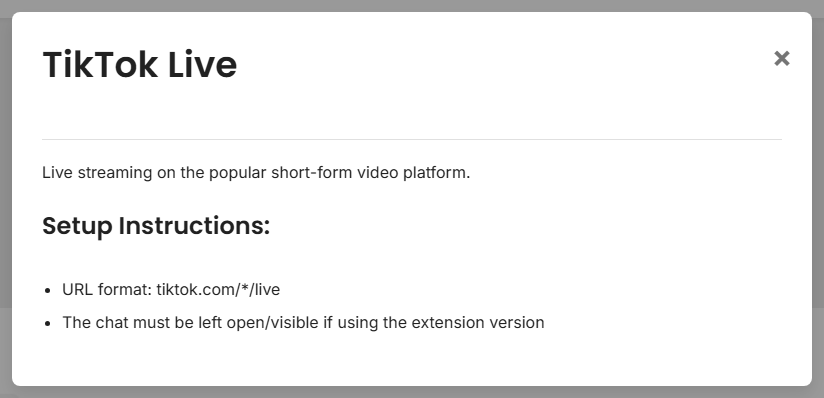

Choose the simplest capture path before opening OBS.
Search for your platform first. Click it and read the short setup note before trying a harder method.

Start here for YouTube, Twitch, Facebook, Discord, Slack, WhatsApp, and most browser-based sources.
Check exact platform notes on the Supported Sites page.
Desktop setup: Standalone App Guide.
Source pages are normal. They just mean Social Stream needs a special page for that platform.
| Situation | Use |
|---|---|
| Standard supported chat site | Browser extension |
| Site says pop out chat | Popout/chat-only window |
| Hidden browser tab stops updating | Desktop app |
| Setup asks for room/channel/token | Source page |
| Custom automation or incoming data | Commands/API or custom source |
When in doubt, start with the easiest matching row. You can switch methods later.